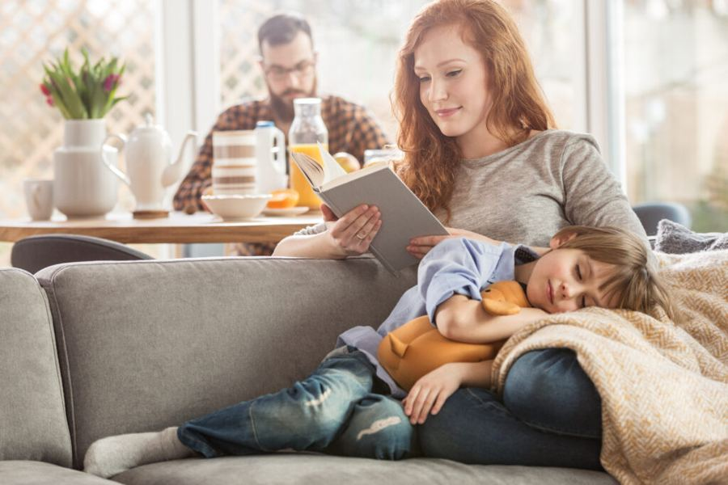
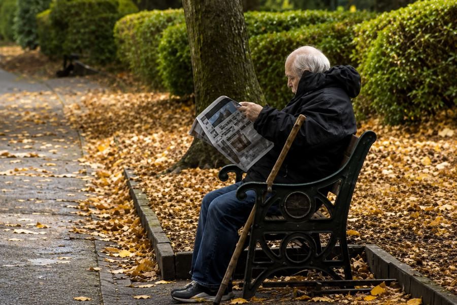
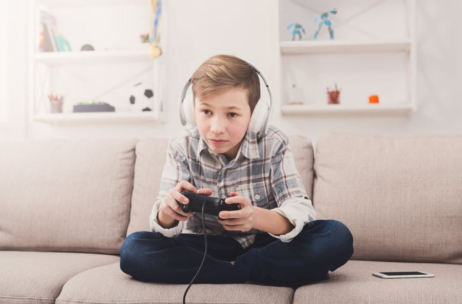
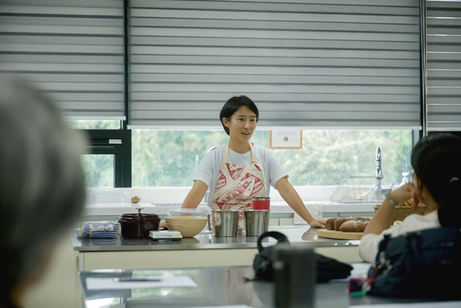

Aptis Speaking
Part 1: In this part, I am going to ask you three short questions about yourself and your interests. You will have 30 seconds to reply to each question.
There are four people in my family; my husband, my children and me. My husband is a doctor. He worked for a hospital in Hanoi. My children are little. At the weekend, we often go out. I really love my family. Every weekend, we usually go to the park or visit my parents together. These moments make our family bond stronger. I feel very happy whenever we are all together.
Last week I visited my best friend. She is living in Ho Chi Minh City. It’s a long time I hadn’t seen her. We talked for hours. We were so happy . We shared a lot of stories about our lives and laughed a lot. It felt like no time had passed since we last met. I hope to visit her again soon.
I stayed at home and watched TV with my family. We watched a cartoon. It was Tom and Jerry. It was about a cat and a mouse. It was very funny. I really liked the mouse because he was cute and smart. It was a relaxing evening because I did not have to go anywhere. My children also enjoyed watching it with me. We all laughed together at the funny parts.
Part 2: In this part, I'm going to ask you to describe a picture. Then I will ask you two questions about it. You will have 45 seconds for each response.
 |
1. Describe the picture In this picture, I can see three people. I think they are a family. They are at home. The woman and the chain relaxing on a sofa. The woman is reading a book and the child is sleeping. Behind them, the man is having breakfast. On the table, I can see some food, drink and a plant. I like this picture because it shows happiness of a family. |
2. Why is it important to play with children?
=> It is important to play with children because it is relaxing and useful. It makes people feel happy and share happy moments with children. It is a way to show love and learn new things. For example, I often play board games with my children after dinner. It helps us understand each other better. These small moments mean a lot to me.
3. How should parents spend time together with their children?
=> There are many things that parents can do with their children. They can play games and read books with their children. This can help children learn a lot of things and build good habits. Besides, parents can play sports with them. It is good for their health . I think spending quality time together also teaches children important life skills. It creates good memories that they will remember when they grow up. Parents should try to do this every day.
Part 3: In this part, I'm going to ask you to compare two pictures, and I will then ask you two questions about them. You will have 45 seconds for each response.
1. Tell me what you can see in these two pictures.
 |
 |
The two pictures show people in different places
In the first picture, I can see a man. He is about 70. He is sitting on a bench in a park. He is reading newspaper under the tree. He looks calm and relaxed.
In the second picture, I can see a boy. He is about 10. He is sitting on a sofa and playing video games. He looks focused. Both people seem to enjoy their own activities in a peaceful way. I think it shows how different generations spend their free time. It is interesting to see this comparison.
2. Do you prefer reading newspapers or playing video games?
=> both newspapers and video games have different attractions depending on people’s interests. Some people like playing games because it is interesting. It can help relax after a busy day and share happy moments with friends. For me, I prefer reading newspaper because it is enjoyable. I often read newspaper when I have free time. I like reading the news because it helps me understand what is happening in the world. It also feels less tiring than playing video games for a long time. I usually read the newspaper every morning.
3. What are the benefits of reading?
=> there are some benefits of reading. First, we can update information about the world. Second, we can learn a lot of things. Last, we can relax and reduce stress. Reading also improves my vocabulary and helps me write better. I try to read for at least twenty minutes every day. It has become a good habit for me.
Part 4: In this part, I'm going to show you a picture and ask you three questions. You will have one minute to think about your answers before you start speaking. You will have two minutes to answer all three questions.

Tell me about a time you learned something new.
What do you think about the belief that older people don't learn anything new? Is it correct?
What are your thoughts on the idea that it's never too late, whether you're young or old, to start learning a new skill?
Regarding the first question, today I'm going to talk about a time when I learned something new. It was last year when I learned how to cook. My mother taught me at home. I felt very happy because I could cook for my family. At first it was difficult, but I practiced many times until I improved. Now I can cook several dishes for my family. It gives me a great sense of achievement.
Turning to the second question, I don't think it is correct. Older people can still learn many new things if they keep trying. I have seen many older people learn new skills like using smartphones or painting. Age should not stop anyone from learning something new.
About the last question, I think it is never too late to learn a new skill. Learning helps people become more confident and makes life more interesting. Learning new skills also keeps our minds active and healthy. I believe everyone should keep learning throughout their life.